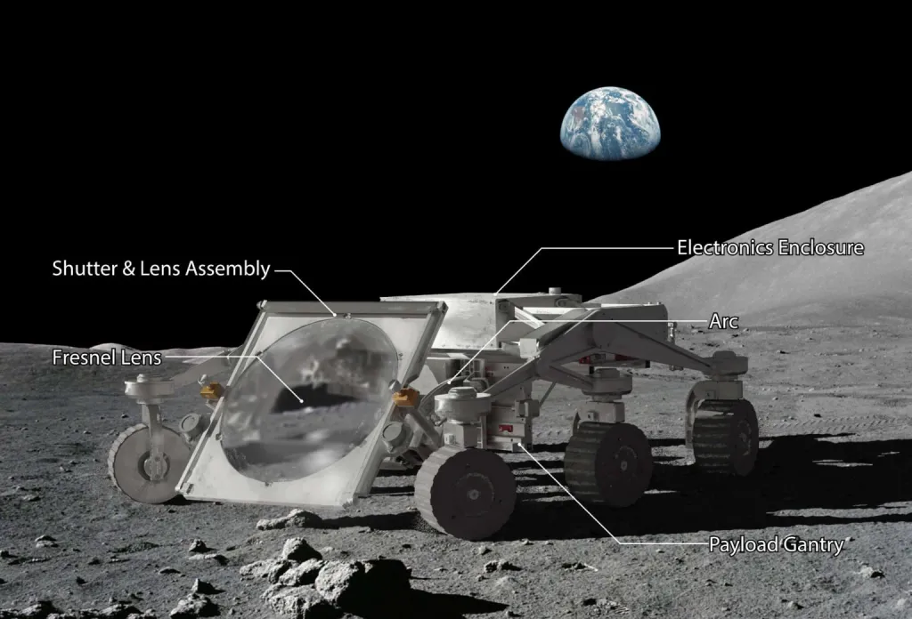
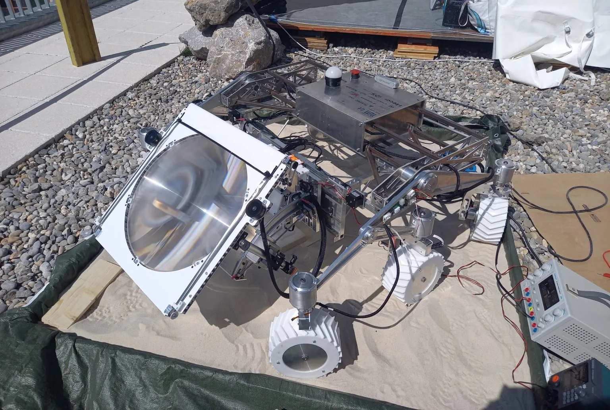
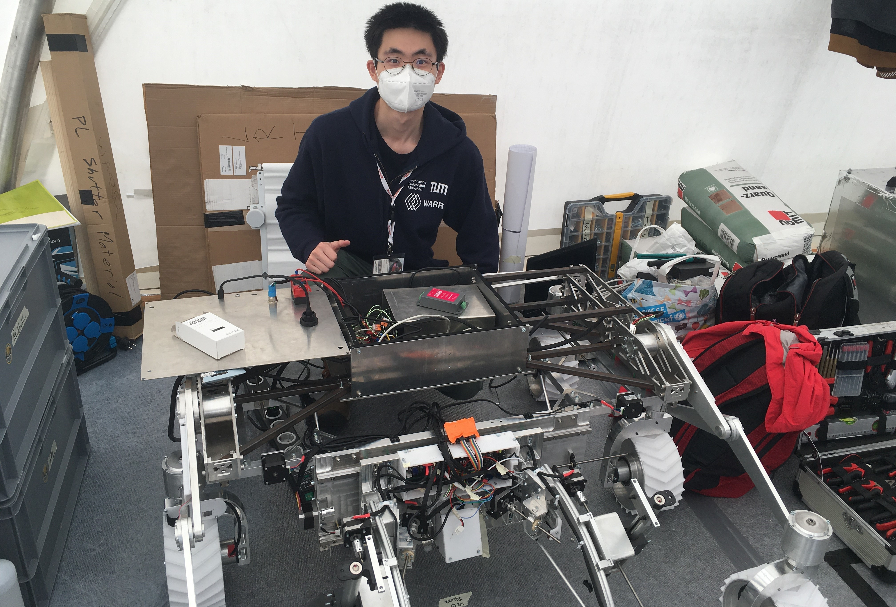
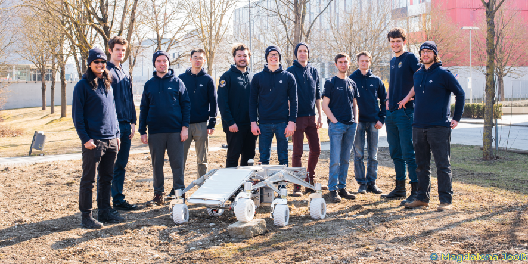

Project REBELS is a student-led initiative aimed at developing a mobile construction rover capable of building infrastructure on the Moon. Aligned with the European Space Agency's (ESA) Moon Village concept —a vision for an open architecture and international community initiative on the lunar surface EUROPEAN SPACE AGENCY —REBELS seeks to utilize in-situ resource utilization (ISRU) by employing solar sintering techniques to process lunar regolith into solid building materials. This approach reduces the need to transport construction materials from Earth, thereby lowering costs and risks associated with establishing a sustainable human presence on the Moon.
REBELS: Rover for the Establishment of Bases and Encampments on the Lunar Surface
Project REBELS is a student-led initiative aimed at developing a mobile construction rover capable of building infrastructure on the Moon. Aligned with the European Space Agency's (ESA) Moon Village concept —a vision for an open architecture and international community initiative on the lunar surface EUROPEAN SPACE AGENCY —REBELS seeks to utilize in-situ resource utilization (ISRU) by employing solar sintering techniques to process lunar regolith into solid building materials. This approach reduces the need to transport construction materials from Earth, thereby lowering costs and risks associated with establishing a sustainable human presence on the Moon.
The rover is designed to collect and sinter lunar regolith using concentrated solar energy, transforming it into durable structures. This method leverages existing technologies in space exploration rovers and sintering processes, addressing the challenge of integrating these systems for effective ISRU. By focusing on the intersection of mobility and construction capabilities, Project REBELS contributes to the foundational infrastructure necessary for future lunar outposts, serving as a stepping stone for more ambitious missions, including the exploration of Mars.
I was involved in all phases of the project regarding the experimental payload, including design, construction, manufacturing and testing. The team successfully demonstrated the robot's capabilities during the IGLUNA 2021 field campaign organized by the Swiss Space Agency and the European Space Agency in Lucerne. Worked closely with the WARR team to combine various expertise to drive the project to success.


